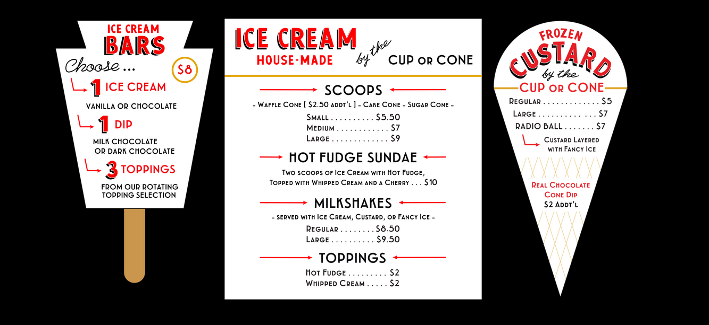
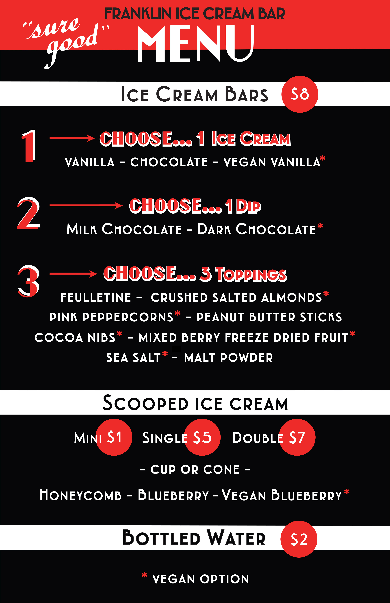
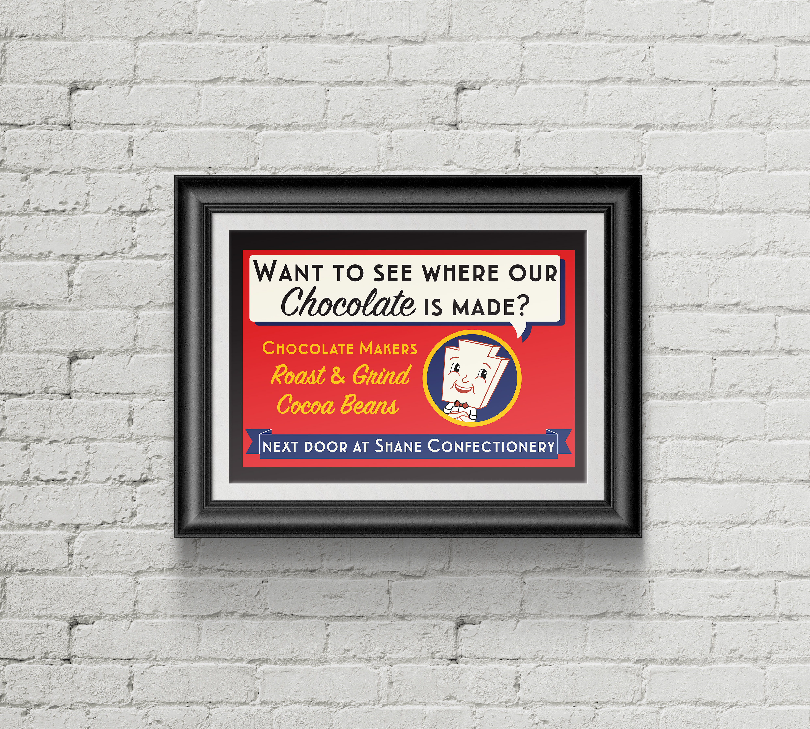

In-House

Ice Cream Menu Boards - Franklin Ice Cream Bar

Event Menu Sign - Franklin Ice Cream Bar
This menu sign is a portable version of the Franklin Ice Cream Bar menu for pop-up events. The design needed to capture the 1930’s and 40’s Art Deco aesthetic, but is vectorized so it can be printed at a variety of sizes based on the need of the particular event. Instead of a traditional menu layout, the ice cream bars are broken down into larger highlighted steps with ingredient options underneath. It utilizes the brand’s color scheme of red, black, and white.
This menu sign is a portable version of the Franklin Ice Cream Bar menu for pop-up events. The design needed to capture the 1930’s and 40’s Art Deco aesthetic, but is vectorized so it can be printed at a variety of sizes based on the need of the particular event. Instead of a traditional menu layout, the ice cream bars are broken down into larger highlighted steps with ingredient options underneath. It utilizes the brand’s color scheme of red, black, and white.
 Customizable Chocolate Packaging - Shane Confectionery
Customizable Chocolate Packaging - Shane Confectionery
These stickers are made to be placed on a variety of food products produced by Franklin Fountain and sold throughout their multiple storefronts of Shane Confectionery, the Franklin Fountain, and Franklin Ice Cream Bar; as well as any satellite pop-ups. Because it is being used across multiple storefronts, the graphic needed to have a retro aesthetic but be simple enough to carry across the various eras represented by each storefront.  Print Advertisement and Character Design - Franklin Ice Cream Bar